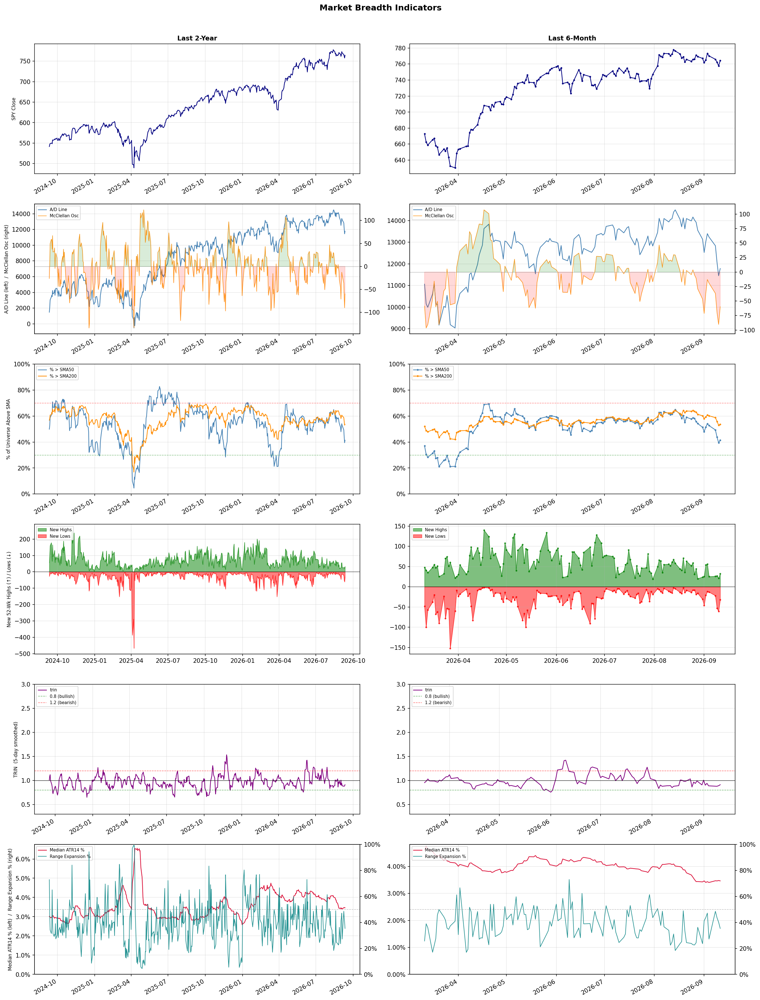

A daily market breadth and sector rotation report for active investors
| Item | Read |
|---|---|
| Regime | Defensive |
| Risk posture | Defensive |
| Universe | 1,325 stocks tracked · 32 new 52-week highs · 30 active swing setups |
| Breadth | only 41.4% of tracked stocks are above SMA50, McClellan oscillator (breadth momentum) is negative at -59.8 |
| Leadership | Oil & Gas Refining & Marketing, Oil & Gas Integrated, and Oil & Gas E&P |
| Weakest groups | Footwear & Accessories, Solar, and Airlines |
Use this report to prioritize research and chart review; validate entries, stops, liquidity, earnings, and risk before acting.
| Item | Read |
|---|---|
| Primary read | Defensive regime with Defensive risk posture. |
| Research queue | UGP, DINO, VLO, MPC, PSX |
| Leadership focus | Oil & Gas Refining & Marketing, Oil & Gas Integrated, and Oil & Gas E&P |
| Caution list | Footwear & Accessories, Solar, and Airlines |
| Review prompt | Check extension risk, chart location, fundamentals, valuation, and earnings before using any research row. |
| Item | Read |
|---|---|
| Primary read | 3 active risk warnings; use screen output as watchlist input only. |
| Bullish screens | PBF, DHT, FRO, NAT, ING |
| Bearish screens | ARDX, SPRY, WVE, MPT, VRRM |
| Alerts / levels | Automated trigger, stop, ATR, liquidity, reward/risk, and event-risk levels are pending future enrichment. |
| Review prompt | Open the linked chart, define trigger and invalidation, then check liquidity and event risk independently. |
Risk Posture: Defensive — screen backdrop favors caution; require independent risk review before new exposure
Metric context: McClellan below -50 = elevated selling pressure; below -100 = washout territory. Range Expansion = share of stocks with daily range above their 20-day average. Signal Density = share of tracked names appearing in signal screens.
| Breadth Date | % > SMA50 | % > SMA200 | New Highs | New Lows | McClellan | Median Range | Avg Range | Median ATR14 | Range Expansion | Signal Density |
|---|---|---|---|---|---|---|---|---|---|---|
| 2026-09-11 | 41.4% | 53.6% | 32 | 32 | -59.8 | 2.7% | 3.2% | 3.5% | 35.4% | 9.1% |

Prior comparison date: September 10, 2026
| Metric | Prior | Current | Change |
|---|---|---|---|
| Regime | Defensive | Defensive | unchanged |
| Risk Posture | Defensive | Defensive | unchanged |
| % > SMA50 | 39.4% | 41.4% | +2.0 pts |
| % > SMA200 | 53.0% | 53.6% | +0.6 pts |
| New Highs | 20 | 32 | +12 |
| New Lows | 61 | 32 | +29 |
Top-10 industries entering: Banks - Diversified. Top-10 industries leaving: Medical Care Facilities. New multi-signal long setups: BHC, ING, MFG, NAT, NMR. New multi-signal short setups: ARDX, BXMT, CMS, FLO, OKLO.
| Status | Tickers | Read |
|---|---|---|
| Added | ARDX, AU, BHC, BP, BXMT, CMS, DXYZ, FLO | New technical screen matches vs prior report. |
| Removed | BN, BROS, COO, CPNG, ET, GRAB, HDB, LCID | No longer present in today's technical screen matches. |
| Still Active | DHT, FRO, HPQ, MCD, MPT, QRVO, SPRY, SWKS | Appeared in both current and prior reports. |
| Promoted | QRVO, SWKS | Model Screen Score improved by at least 15 points. |
| Downgraded | none | Model Screen Score declined by at least 15 points. |
| Direction | Industry | ETF | Prior Rank | Current Rank | Days | Rank Change |
|---|---|---|---|---|---|---|
| Rose | Gold | GDX | 84 | 5 | 42 | +79 |
| Rose | Agricultural Inputs | N/A | 84 | 6 | 28 | +78 |
| Rose | Oil & Gas Equipment & Services | XES | 81 | 17 | 35 | +64 |
| Rose | Capital Markets | KCE | 70 | 13 | 35 | +57 |
| Rose | Oil & Gas E&P | XOP | 53 | 3 | 35 | +50 |
Bull: The rising relative strength of gold, as reflected in the GDX ETF, is likely driven by persistent macroeconomic uncertainties and inflationary pressures, which continue to make gold an attractive safe-haven asset. Despite recent outflows from GDX, analysts like VanEck’s Casanova suggest that the current pullback in gold prices is merely noise, reinforcing the notion that gold mining stocks remain a standout trade amid ongoing industry pressures, as highlighted in the Yahoo Finance article on stocks to watch. Additionally, the contrasting performance of gold miners versus gold itself indicates a potential for greater returns in mining stocks, further bolstering investor interest in the sector.
Bear: While the rising relative strength of gold may suggest a safe-haven appeal, the recent outflows from the GDX ETF indicate waning investor confidence in gold mining stocks, which could be a sign of broader market skepticism. Additionally, the notion that mining stocks will outperform gold itself overlooks the inherent operational risks and cost pressures faced by miners, especially in a volatile economic environment where inflation may not translate into sustained higher gold prices. This disconnect suggests that investors should approach the sector with caution, as the current bullish sentiment may not be supported by underlying fundamentals.
Verdict: The gold industry is experiencing a rise due to persistent macroeconomic uncertainties and inflationary pressures, which enhance gold's appeal as a safe-haven asset. However, the key risk lies in the recent outflows from the GDX ETF, indicating potential waning investor confidence in gold mining stocks and highlighting the operational challenges miners face amid volatile economic conditions. Investors should remain cautious and consider diversifying their exposure to mitigate risks associated with mining stocks.
Sources: Yahoo Finance, Google News
Bull: The Agricultural Inputs sector is experiencing rising relative strength primarily due to increasing investor confidence in the sector, as highlighted by the positive sentiment in headlines such as "Best Agriculture Stocks to Buy in 2026" and the identification of undervalued opportunities within the US Basic Materials sector. Additionally, the recent surge in Corteva's stock price indicates a broader momentum building within the agricultural sector, suggesting that market participants are recognizing the potential for growth driven by factors such as rising global food demand and advancements in agricultural technology.
Bear: While the agricultural inputs sector may exhibit rising relative strength, this trend could be misleading due to short-term market fluctuations rather than sustainable growth. The recent drop in CF Industries Holdings and the sector-wide selling indicate underlying volatility and potential overvaluation, suggesting that investor confidence may be more speculative than based on solid fundamentals. Furthermore, the reliance on external factors such as global food demand and technological advancements could be undermined by geopolitical tensions, climate change impacts, and regulatory challenges, which could hinder long-term growth prospects in the sector.
Verdict: The agricultural inputs sector is experiencing rising relative strength driven by increasing investor confidence, fueled by a surge in demand for food and advancements in agricultural technology, as evidenced by the positive momentum in stocks like Corteva. However, key risks remain, particularly the potential for overvaluation and external pressures such as geopolitical tensions and climate change, which could undermine the sector's long-term growth prospects. Investors should closely monitor these risks while considering opportunities in undervalued stocks within the sector.
Sources: Google News
Bull: The Oil & Gas Equipment & Services sector, represented by the SPDR S&P Oil & Gas Equipment & Services ETF (XES), is experiencing rising relative strength primarily due to the recent surge in oil prices, which is driving increased demand for equipment and services necessary for exploration and production. As highlighted in the headlines, the ETF is being recognized as a strong investment option amidst this price surge, and analysts are identifying it as a key beneficiary of the current market dynamics, suggesting a robust outlook for companies within this sector. Additionally, the focus on top-performing oil stocks indicates a broader confidence in the industry's recovery and growth potential, further bolstering the sector's strength.
Bear: While the recent surge in oil prices may temporarily boost demand for equipment and services in the Oil & Gas sector, this trend is often cyclical and susceptible to rapid downturns, particularly with increasing global focus on renewable energy and regulatory pressures aimed at reducing fossil fuel dependency. Additionally, the rising costs of raw materials and potential supply chain disruptions could erode profit margins for companies within the SPDR S&P Oil & Gas Equipment & Services ETF (XES), making the current bullish sentiment potentially short-lived. Investors should remain cautious, as the sector's reliance on volatile oil prices poses significant risks that could overshadow any short-term gains.
Verdict: The Oil & Gas Equipment & Services sector is experiencing a rise due to a surge in oil prices, which is driving increased demand for exploration and production services. However, investors should be cautious of the cyclical nature of this trend, as well as the potential impact of rising raw material costs and regulatory pressures aimed at reducing fossil fuel reliance, which could undermine profit margins and lead to a swift downturn.
Sources: Yahoo Finance, Google News
Bull: The rising relative strength of the Capital Markets sector, as highlighted by recent headlines, can be attributed to a combination of robust investor sentiment and the overall resilience of financial markets. The ongoing discussions around strong ETFs like the State Street SPDR S&P Capital Markets ETF (KCE) and the positive outlook for stocks in this sector, as noted in J.P. Morgan's report on sectors primed for growth, suggest that investors are increasingly confident in the profitability and stability of capital market firms. Additionally, the comparative analysis of stock performance, particularly with firms like Interactive Brokers, indicates that capital markets are outperforming other sectors, further bolstering bullish sentiment.
Bear: While the rising relative strength of the Capital Markets sector may reflect positive investor sentiment, it is crucial to consider the underlying macroeconomic uncertainties that could undermine this optimism. Factors such as potential interest rate hikes, inflationary pressures, and geopolitical tensions could dampen market performance and investor confidence, leading to increased volatility in capital markets. Furthermore, the reliance on a few strong performers, like Interactive Brokers, may mask broader weaknesses in the sector, suggesting that the current bullish sentiment could be overly optimistic and fragile.
Verdict: The Capital Markets sector is experiencing a rise due to strong investor sentiment driven by robust performance from key players like Interactive Brokers and favorable reports from analysts, indicating confidence in profitability and stability. However, investors should remain cautious of macroeconomic risks such as potential interest rate hikes and inflationary pressures, which could lead to increased volatility and undermine the current bullish outlook. It's advisable to closely monitor these economic indicators while considering diversified investments to mitigate potential risks.
Sources: Yahoo Finance, Google News
Bull: The Oil & Gas Exploration and Production (E&P) sector is experiencing a surge in relative strength primarily due to rising oil prices, with Goldman Sachs projecting oil to reach $120 per barrel, which is driving investor interest in energy ETFs like XOP that recently hit a 52-week high. Additionally, despite broader market volatility, as indicated by the Dow's significant drop, oil stocks are gaining traction, suggesting a robust demand for energy assets as highlighted by multiple analysts identifying top-performing E&P stocks and favorable market conditions for the sector.
Bear: While the recent surge in oil prices and the relative strength of the E&P sector may seem promising, it's crucial to consider the broader economic context, including potential demand destruction due to rising interest rates and inflationary pressures. Additionally, the volatility in the stock market, exemplified by the Dow's significant drop, raises concerns about the sustainability of this rally in oil stocks, as investor sentiment could quickly shift in response to economic uncertainties or geopolitical developments that could negatively impact oil demand.
Verdict: The Oil & Gas E&P sector's recent surge is fundamentally driven by rising oil prices, with projections from Goldman Sachs indicating potential highs of $120 per barrel, attracting significant investor interest in energy assets despite broader market volatility. However, the key risk lies in the potential for demand destruction due to rising interest rates and inflation, which could dampen consumer spending and impact oil demand, making it essential for investors to closely monitor economic indicators and geopolitical developments that could influence market sentiment.
Sources: Yahoo Finance, Google News
| Direction | Industry | ETF | Prior Rank | Current Rank | Days | Rank Change |
|---|---|---|---|---|---|---|
| Fell | Travel Services | N/A | 6 | 78 | 35 | -72 |
| Fell | Airlines | N/A | 18 | 85 | 35 | -67 |
| Fell | Apparel Manufacturing | N/A | 19 | 84 | 35 | -65 |
| Fell | Leisure | N/A | 9 | 73 | 42 | -64 |
| Fell | Industrial Distribution | N/A | 14 | 76 | 35 | -62 |
Bear: While the bull analyst highlights macroeconomic pressures and the rise of tech-driven solutions as factors affecting the Travel Services industry, it's crucial to recognize that these same pressures may lead to a prolonged period of consumer caution, stifling recovery in discretionary spending for travel. Additionally, the emphasis on AI innovations like Webuy's travel card could signal a fundamental shift in consumer behavior, where traditional travel services may struggle to adapt, further eroding their market share and profitability. This confluence of factors suggests that the industry's relative weakness may persist, as consumers prioritize cost-effectiveness and convenience over traditional travel experiences.
Bull: The Travel Services industry is experiencing a decline in relative strength primarily due to macroeconomic pressures affecting consumer discretionary spending, as highlighted by the Q2 earnings reports from travel and vacation providers like Frontier (NASDAQ:ULCC). Additionally, the focus on undervalued stocks suggests that investors may be cautious about the sector's recovery potential, particularly as AI innovations, such as Webuy's travel card, indicate a shift towards tech-driven solutions that could disrupt traditional travel services. This combination of cautious consumer sentiment and evolving industry dynamics is likely contributing to the sector's relative weakness.
Verdict: The Travel Services industry's decline is primarily driven by macroeconomic pressures that are curbing consumer discretionary spending, compounded by a shift towards tech-driven solutions that may disrupt traditional travel services. The key risk from the bear case is the potential for a prolonged period of consumer caution, which could hinder recovery and further erode the profitability of established players in the sector. Investors should closely monitor consumer sentiment and the adoption of innovative travel technologies to gauge the industry's recovery trajectory.
Sources: Google News
Bear: While the bull thesis suggests that the airline industry may rebound as companies adapt to challenges, the persistent relative weakness in the sector indicates deeper, systemic issues that may not be easily resolved. Rising operational costs, particularly from fuel and labor, are not just short-term hurdles but could lead to sustained pressure on profit margins, especially if economic headwinds intensify. Furthermore, the optimism expressed by analysts may overlook the potential for a prolonged downturn in consumer demand and increased competition from low-cost carriers, which could further erode profitability and investor confidence in the sector.
Bull: The relative weakness in the airline industry can be attributed to ongoing challenges such as rising operational costs and potential economic headwinds, as highlighted in the recent headlines discussing the industry's struggles. Additionally, investor sentiment may be dampened by concerns over profitability amidst fluctuating fuel prices and labor shortages, which are critical factors mentioned in articles from Investor's Business Daily and Yahoo Finance. However, with analysts from The Motley Fool and Zacks pointing to potential investment opportunities, there is optimism that these challenges could lead to a rebound in the sector as airlines adapt and innovate.
Verdict: The airline industry's current decline can be fundamentally attributed to persistent operational challenges, particularly rising fuel and labor costs, which are squeezing profit margins and dampening investor sentiment. Key risks from the bear case include the potential for a prolonged downturn in consumer demand and intensified competition from low-cost carriers, which could exacerbate profitability issues and lead to further declines in the sector. Investors should closely monitor these factors and consider a cautious approach to airline stocks until there are clear signs of recovery and adaptation to these systemic challenges.
Sources: Google News
Bear: While the bull analyst points to optimism in select stocks, the overall declining relative strength trend in the Apparel Manufacturing industry indicates broader systemic issues that cannot be ignored. Factors such as rising inflation, supply chain disruptions, and changing consumer behavior towards sustainable and second-hand fashion are likely to persist, undermining the potential for a significant rebound. Additionally, increased competition from both established brands and emerging direct-to-consumer models poses a substantial threat to profit margins across the sector, suggesting that the favorable headlines may not translate into sustainable growth for the industry as a whole.
Bull: The Apparel Manufacturing industry is currently experiencing a decline in relative strength due to shifting consumer preferences and macroeconomic pressures, as highlighted in recent headlines discussing favorable trends for specific stocks. Factors such as increased competition and evolving fashion trends may have led to a temporary downturn, but the optimism reflected in articles like "4 Textile-Apparel Stocks Poised to Gain From Favorable Industry Trends" and "5 Shoes & Retail Apparel Stocks Well-Poised for the Industry's Next Growth Phase" suggests that select companies are well-positioned to capitalize on emerging growth opportunities, indicating a potential rebound in the sector.
Verdict: The Apparel Manufacturing industry's decline can be fundamentally attributed to shifting consumer preferences towards sustainability and second-hand fashion, compounded by macroeconomic pressures such as rising inflation and supply chain disruptions. While select companies may capitalize on emerging growth opportunities, the key risk highlighted by the bear thesis is the persistent competition and systemic challenges that could hinder a broad recovery, suggesting a cautious approach to investment in the sector. Investors should focus on companies with strong sustainability practices and adaptable business models to navigate these challenges effectively.
Sources: Google News
Bear: While the bull thesis highlights selective opportunities within the leisure sector, it overlooks the broader and more persistent macroeconomic headwinds, such as sustained inflation and rising interest rates, which are likely to continue suppressing consumer spending and travel demand. The recent gains in stocks like Viking and Travel + Leisure may be more reflective of short-term market volatility rather than a genuine recovery, as the overall declining relative strength trend suggests that many companies in the industry are still struggling to adapt to these challenging economic conditions. Furthermore, the focus on "buy-rated" stocks from Deutsche Bank may not account for the systemic risks that could further impact the entire sector, leading to potential losses even among seemingly strong players.
Bull: The Leisure industry is experiencing a decline in relative strength primarily due to macroeconomic pressures such as inflation and rising interest rates, which have dampened consumer spending and travel demand. This is evident from headlines highlighting industry challenges, yet they also point to resilience with stocks like Viking and Travel + Leisure seeing significant gains, indicating that selective opportunities still exist. Furthermore, the mention of Deutsche Bank identifying buy-rated stocks suggests that while the sector faces headwinds, there are fundamentally strong companies poised for recovery as consumer sentiment improves.
Verdict: The leisure industry's decline is fundamentally driven by persistent macroeconomic pressures, including sustained inflation and rising interest rates, which are suppressing consumer spending and travel demand. While there may be selective opportunities in stocks like Viking and Travel + Leisure, investors should remain cautious of the broader systemic risks that could hinder recovery across the sector, as many companies are still struggling to adapt to these challenging conditions. It is essential to conduct thorough due diligence on individual stocks while being mindful of the overall economic environment.
Sources: Google News
Bear: While the bull analyst points to macroeconomic factors and company-specific dynamics, the broader trend of falling relative strength in the Industrial Distribution sector suggests deeper systemic issues at play. The leadership change at MSC Industrial, while potentially positive in the long run, introduces uncertainty during a critical time when investors are already wary of supply chain disruptions and inflationary pressures. Furthermore, the mixed earnings reports, particularly from key players like United Rentals, indicate that the sector may be facing not just cyclical challenges but also structural weaknesses that could hinder growth and profitability moving forward.
Bull: The relative strength of the Industrial Distribution sector is likely falling due to a combination of macroeconomic factors and specific company performance dynamics. The recent headlines indicate a mixed earnings landscape, with companies like United Rentals facing scrutiny in their Q2 results, while MSC Industrial is undergoing leadership changes that may create uncertainty. Additionally, despite growth in the manufacturing index in June, concerns about supply chain disruptions and the overall economic outlook may be dampening investor sentiment, as highlighted by the analysis of FTAI Aviation's performance relative to peers.
Verdict: The Industrial Distribution sector is experiencing falling relative strength primarily due to macroeconomic headwinds, including supply chain disruptions and inflationary pressures, compounded by mixed earnings reports from major players like United Rentals. The leadership transition at MSC Industrial adds a layer of uncertainty that could exacerbate investor concerns. The key risk from the bear case lies in the potential for these structural weaknesses to persist, limiting growth and profitability in the sector, which investors should monitor closely.
Sources: Google News
| Industry | Rank | ETF | 7d | 14d | 28d | 42d | Chg 42d | Size | 20D | 60D | Composite | Active Setups |
|---|---|---|---|---|---|---|---|---|---|---|---|---|
| Oil & Gas Refining & Marketing | 1 | CRAK | 1 | 8 | 5 | 1 | 0 | 7 | 13.5% | 58.3% | 0.984 | 0 |
| Oil & Gas Integrated | 2 | XLE | 7 | 33 | 25 | 7 | +5 | 10 | 9.5% | 19.7% | 0.924 | 0 |
| Oil & Gas E&P | 3 | XOP | 8 | 17 | 36 | 30 | +27 | 26 | 10.0% | 19.1% | 0.889 | 0 |
| Diagnostics & Research | 4 | N/A | 2 | 1 | 2 | 6 | +2 | 16 | 3.6% | 33.0% | 0.880 | 0 |
| Gold | 5 | GDX | 3 | 5 | 19 | 84 | +79 | 25 | 7.9% | 9.9% | 0.876 | 1 |
| Agricultural Inputs | 6 | N/A | 5 | 23 | 84 | 57 | +51 | 5 | 14.1% | 14.6% | 0.840 | 0 |
| Health Information Services | 7 | N/A | 4 | 2 | 3 | 34 | +27 | 12 | 4.6% | 31.6% | 0.834 | 0 |
| Steel | 8 | SLX | 6 | 41 | 30 | 16 | +8 | 5 | 9.2% | 3.6% | 0.831 | 0 |
| Oil & Gas Midstream | 9 | AMLP | 10 | 19 | 32 | 11 | +2 | 22 | 5.8% | 13.2% | 0.823 | 0 |
| Banks - Diversified | 10 | N/A | 11 | 14 | 10 | 3 | -7 | 16 | 0.7% | 10.1% | 0.805 | 0 |
Rank columns (7d–42d) show the industry's rank that many trading days ago — lower is stronger. Chg 42d = rank change vs 42 trading days ago — positive means the industry moved up. 20D and 60D are the mean stock return within the industry over that period. Active Setups: count of today's swing-trade candidates from this industry appearing across all signal screens.
| Industry | Rank | ETF | 7d | 14d | 28d | 42d | Chg 42d | Size | 20D | 60D | Composite | Active Setups |
|---|---|---|---|---|---|---|---|---|---|---|---|---|
| Footwear & Accessories | 87 | N/A | 88 | 87 | 85 | 63 | -24 | 5 | -15.0% | -23.9% | 0.030 | 0 |
| Solar | 86 | TAN | 87 | 88 | 88 | 85 | -1 | 8 | -10.1% | -30.7% | 0.080 | 0 |
| Airlines | 85 | N/A | 74 | 78 | 40 | 39 | -46 | 8 | -14.4% | -13.0% | 0.126 | 0 |
| Apparel Manufacturing | 84 | N/A | 77 | 69 | 62 | 24 | -60 | 6 | -10.8% | -12.5% | 0.130 | 0 |
| Rental & Leasing Services | 83 | N/A | 71 | 73 | 60 | 64 | -19 | 6 | -11.2% | -21.1% | 0.139 | 0 |
| Chemicals | 82 | N/A | 82 | 86 | 87 | 83 | +1 | 8 | -8.5% | -25.4% | 0.139 | 0 |
| Building Products & Equipment | 81 | XHB | 79 | 72 | 61 | 67 | -14 | 8 | -10.0% | -9.7% | 0.144 | 0 |
| Electrical Equipment & Parts | 80 | XLI | 84 | 79 | 70 | 82 | +2 | 12 | -11.1% | -28.8% | 0.154 | 0 |
| Aerospace & Defense | 79 | ITA | 86 | 68 | 39 | 86 | +7 | 26 | -19.4% | -20.2% | 0.158 | 1 |
| Travel Services | 78 | N/A | 66 | 58 | 18 | 8 | -70 | 10 | -15.1% | -8.8% | 0.169 | 0 |
Rank columns (7d–42d) show the industry's rank that many trading days ago — lower is stronger. Chg 42d = rank change vs 42 trading days ago — positive means the industry moved up. 20D and 60D are the mean stock return within the industry over that period. Active Setups: count of today's swing-trade candidates from this industry appearing across all signal screens.
These are research candidates from top-ranked stocks, capped at five names per industry to avoid over-concentration. Returns shown (60D, 120D, 250D) are historical — they reflect where prices have already moved, not forward expectations. Extension Risk flags names that may require extra patience or a better entry point. They are not buy signals.
Chart: TV = TradingView chart (opens in browser); PDF = local chart file (if downloaded).
| Ticker | Name | Industry | Industry Rank | Market Cap | 60D Hist | 120D Hist | 250D Hist | Extension Risk | Research Reason | Chart |
|---|---|---|---|---|---|---|---|---|---|---|
| UGP | Ultrapar Participacoes | Oil & Gas Refining & Marketing | 1 | N/A | 63.6% | 56.2% | 99.8% | Extended | Top-ranked in industry; extended | TV |
| DINO | HF Sinclair | Oil & Gas Refining & Marketing | 1 | N/A | 63.0% | 81.4% | 117.9% | Extended | Top-ranked in industry; extended | TV |
| VLO | Valero Energy | Oil & Gas Refining & Marketing | 1 | N/A | 60.5% | 64.2% | 154.4% | Extended | Top-ranked in industry; extended | TV |
| MPC | Marathon Petroleum | Oil & Gas Refining & Marketing | 1 | N/A | 58.5% | 71.4% | 123.3% | Extended | Top-ranked in industry; extended | TV |
| PSX | Phillips 66 | Oil & Gas Refining & Marketing | 1 | N/A | 51.7% | 49.7% | 104.3% | Extended | Top-ranked in industry; extended | TV |
| EQNR | Equinor | Oil & Gas Integrated | 2 | N/A | 33.7% | 9.9% | 93.7% | Constructive | Top-ranked in industry | TV |
| PBR | Petroleo Brasileiro SA Petrobras | Oil & Gas Integrated | 2 | N/A | 28.0% | 17.7% | 75.1% | Constructive | Top-ranked in industry | TV |
| CVX | Chevron | Oil & Gas Integrated | 2 | N/A | 19.9% | 8.0% | 41.6% | Constructive | Top-ranked in industry | TV |
| BP | BP PLC | Oil & Gas Integrated | 2 | N/A | 13.4% | 5.4% | 43.0% | Constructive | Top-ranked in industry | TV |
| YPF | YPF SA | Oil & Gas Integrated | 2 | N/A | 8.4% | 32.5% | 105.1% | Constructive | Top-ranked in industry | TV |
| CRGY | Crescent Energy | Oil & Gas E&P | 3 | N/A | 36.8% | 17.9% | 76.4% | Constructive | Top-ranked in industry | TV |
| SM | SM Energy | Oil & Gas E&P | 3 | N/A | 36.6% | 28.5% | 48.5% | Constructive | Top-ranked in industry | TV |
| VET | Vermilion Energy | Oil & Gas E&P | 3 | N/A | 27.7% | -3.9% | 82.1% | Constructive | Top-ranked in industry | TV |
| KOS | Kosmos Energy | Oil & Gas E&P | 3 | N/A | 21.3% | 6.3% | 80.8% | Constructive | Top-ranked in industry | TV |
| MTDR | Matador Resources | Oil & Gas E&P | 3 | N/A | 20.1% | 5.9% | 32.2% | Constructive | Top-ranked in industry | TV |
| PSNL | Personalis | Diagnostics & Research | 4 | N/A | 67.3% | 123.3% | 177.1% | Extended | Top-ranked in industry; extended | TV |
| IQV | IQVIA Holdings | Diagnostics & Research | 4 | N/A | 46.1% | 57.6% | 39.8% | Constructive | Top-ranked in industry | TV |
| WGS | GeneDx Holdings | Diagnostics & Research | 4 | N/A | 40.7% | 22.1% | -31.2% | Constructive | Top-ranked in industry | TV |
| ILMN | Illumina | Diagnostics & Research | 4 | N/A | 25.7% | 66.1% | 117.0% | Constructive | Top-ranked in industry | TV |
| OPK | Opko Health | Diagnostics & Research | 4 | N/A | 12.9% | 40.2% | 12.1% | Constructive | Top-ranked in industry | TV |
These are technical screen matches from existing signal files. They are not trade recommendations. Trigger, stop, ATR, liquidity, reward/risk, and event risk still require separate validation until those inputs are available.
Model Screen Score is weighted by signal count, industry rank, freshness, and setup type. It is not a probability of profit, expected return, or suitability rating. Industry cap: max 3 candidates per industry.
Signal glossary: Momentum Pullback = stock in an uptrend that has pulled back 10–30% and shows re-entry conditions. MA Compression = short- and long-term moving averages converging, often preceding a directional move. Three-Day Up/Down = three consecutive closes in the same direction. New 52Wk High/Low = price reached a new annual extreme.
Chart: TV = TradingView chart (opens in browser); PDF = local chart file (if downloaded).
| Ticker | Industry | Setups | Close | Industry Rank | Signal Count | Model Screen Score | Reason | Chart |
|---|---|---|---|---|---|---|---|---|
| PBF | Oil & Gas Refining & Marketing | New 52Wk High; Three-Day Up | 78.30 | 1 | 2 | 100 | Multi-signal; top industry breakout | TV |
| DHT | Oil & Gas Midstream | New 52Wk High; Three-Day Up | 22.00 | 9 | 2 | 85 | Multi-signal; top industry breakout | TV |
| FRO | Oil & Gas Midstream | New 52Wk High; Three-Day Up | 49.21 | 9 | 2 | 85 | Multi-signal; top industry breakout | TV |
| NAT | Oil & Gas Midstream | New 52Wk High; Three-Day Up | 7.46 | 9 | 2 | 85 | Multi-signal; top industry breakout | TV |
| ING | Banks - Diversified | New 52Wk High; Three-Day Up | 37.27 | 10 | 2 | 85 | Multi-signal; top industry breakout | TV |
| NMR | Capital Markets | New 52Wk High; Three-Day Up | 10.86 | 13 | 2 | 85 | Multi-signal; new-high strength | TV |
| VOD | Telecom Services | New 52Wk High; Three-Day Up | 17.40 | 22 | 2 | 77 | Multi-signal; new-high strength | TV |
| VZ | Telecom Services | New 52Wk High; Three-Day Up | 50.61 | 22 | 2 | 77 | Multi-signal; new-high strength | TV |
| MFG | Banks - Regional | New 52Wk High; Three-Day Up | 11.45 | 29 | 2 | 70 | Multi-signal; new-high strength | TV |
| HPQ | Computer Hardware | New 52Wk High; Three-Day Up | 35.48 | 31 | 2 | 70 | Multi-signal; new-high strength | TV |
| QRVO | Semiconductors | New 52Wk High; Three-Day Up | 116.65 | 40 | 2 | 70 | Multi-signal; new-high strength | TV |
| SWKS | Semiconductors | New 52Wk High; Three-Day Up | 88.35 | 40 | 2 | 70 | Multi-signal; new-high strength | TV |
| UTZ | Packaged Foods | New 52Wk High; Three-Day Up | 14.28 | 49 | 2 | 65 | Multi-signal; new-high strength | TV |
| BHC | Drug Manufacturers - Specialty & Generic | Momentum Pullback | 5.86 | 32 | 2 | 55 | Multi-signal; pullback setup | TV |
| AU | Gold | Momentum Pullback | 104.42 | 5 | 1 | 58 | Single-signal; top industry pullback | TV |
| BP | Oil & Gas Integrated | Three-Day Up | 46.10 | 2 | 1 | 55 | Single-signal; top industry setup | TV |
| TGB | Copper | Momentum Pullback | 8.14 | 12 | 1 | 50 | Single-signal; pullback setup | TV |
| RIOT | Capital Markets | Momentum Pullback | 21.47 | 13 | 1 | 50 | Single-signal; pullback setup | TV |
| DXYZ | Asset Management | Momentum Pullback | 32.11 | 15 | 1 | 50 | Single-signal; pullback setup | TV |
Bearish setups — stocks making new lows or showing persistent downside patterns. Validate carefully before acting.
| Ticker | Industry | Setups | Close | Industry Rank | Signal Count | Model Screen Score | Reason | Chart |
|---|---|---|---|---|---|---|---|---|
| ARDX | Biotechnology | New 52Wk Low; Three-Day Down | 3.58 | 14 | 2 | 55 | Multi-signal; new-low weakness | TV |
| SPRY | Biotechnology | New 52Wk Low; Three-Day Down | 4.76 | 14 | 2 | 55 | Multi-signal; new-low weakness | TV |
| WVE | Biotechnology | New 52Wk Low; Three-Day Down | 4.59 | 14 | 2 | 55 | Multi-signal; new-low weakness | TV |
| MPT | REIT - Healthcare Facilities | New 52Wk Low; Three-Day Down | 3.64 | 36 | 2 | 40 | Multi-signal; new-low weakness | TV |
| VRRM | Information Technology Services | New 52Wk Low; Three-Day Down | 3.55 | 44 | 2 | 35 | Multi-signal; new-low weakness | TV |
| FLO | Packaged Foods | New 52Wk Low; Three-Day Down | 6.09 | 49 | 2 | 35 | Multi-signal; new-low weakness | TV |
| PODD | Medical Devices | New 52Wk Low; Three-Day Down | 131.96 | 53 | 2 | 35 | Multi-signal; new-low weakness | TV |
| MCD | Restaurants | New 52Wk Low; Three-Day Down | 252.53 | 58 | 2 | 35 | Multi-signal; new-low weakness | TV |
| BXMT | REIT - Mortgage | New 52Wk Low; Three-Day Down | 13.35 | 61 | 2 | 25 | Multi-signal; new-low weakness | TV |
| OKLO | Utilities - Independent Power Producers | New 52Wk Low; Three-Day Down | 36.22 | 62 | 2 | 25 | Multi-signal; new-low weakness | TV |
| CMS | Utilities - Regulated Electric | New 52Wk Low; Three-Day Down | 67.15 | 65 | 2 | 25 | Multi-signal; new-low weakness | TV |
How To Use This Report
| Use | Purpose |
|---|---|
| Market map | Start with breadth, regime, risk warnings, and what changed since the prior report. |
| Industry scan | Use leading, deteriorating, rising, and declining industries to focus research. |
| Research queue | Treat long-term candidates as names for deeper fundamental, valuation, and chart review. |
| Technical review | Treat bullish and bearish screen matches as watchlist inputs that require independent trigger, stop, liquidity, and event-risk checks. |
| Source follow-up | Use chart links and source files to verify raw inputs before relying on any row. |
What This Report Is Not
| Not | Meaning |
|---|---|
| Investment advice | The report does not evaluate personal objectives, risk tolerance, tax situation, account type, or suitability. |
| Buy/sell recommendation | Named tickers are research candidates or screen matches, not recommendations to transact. |
| Price target | The report does not provide fair value estimates, targets, or expected returns. |
| Trade plan | Trigger, stop, sizing, reward/risk, liquidity, and event-risk review remain separate user work. |
| Performance claim | Model Screen Score is not validated historical performance or a forecast of future results. |
| Item | Note |
|---|---|
| Version | Daily Report Methodology v1 |
| Model Screen Score | Screen-fit rank based on signal count, industry rank, freshness, and setup type. |
| Not predictive proof | The score is not expected return, probability of profit, historical validation, or suitability analysis. |
| Industry ranks | Composite industry ranks use existing daily ranking outputs and historical rank columns when available. |
| Research candidates | Long-term rows are research candidates from ranked stocks and leading industries, with historical returns labeled as historical only. |
| Technical matches | Bullish and bearish rows are screen matches requiring independent chart, trigger, stop, liquidity, and event-risk review. |
| Source | Status | Rows | Path |
|---|---|---|---|
| Market breadth | present | 1255 | breadth_20260911.csv |
| Industry composite rankings | present | 87 | all_industry_composite_20260911.csv |
| Top ranked stocks | present | 144 | top_ranked_composite_20260911.csv |
| All ranked stocks | present | 1325 | all_stocks_composite_sorted_20260911.csv |
| Top momentum pullbacks | present | 1474 | top_momentum_pullbacks_20260911.csv |
| MA compression | present | 1474 | ma_compression_stocks_20260911.csv |
| Three-day up/down | present | 201 | three_day_up_down_stocks_20260911.csv |
| New 52-week members | present | 64 | breadth_new_52wk_members_20260911.csv |
This report is generated from automated technical screens and is for informational and research purposes only. It is not investment advice, a solicitation, or a recommendation to buy or sell any security. Past performance is not indicative of future results. You are solely responsible for your own investment decisions. Consult a licensed financial advisor before acting on any information herein.